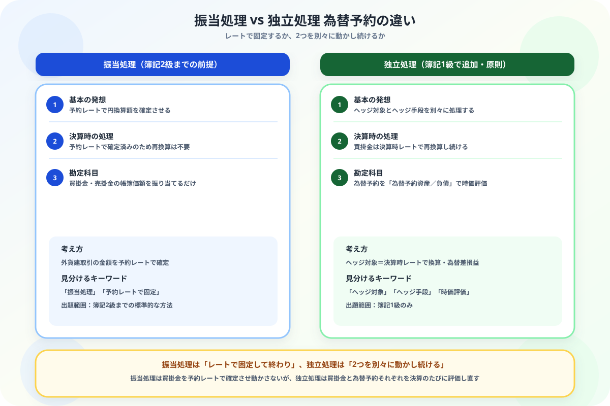

為替予約の振当処理と独立処理の違いがわからない人へ
「2本立てで動かす」発想から整理する図解ガイド
- 振当処理は予約レートで固定して終わり——2級の考え方
- 独立処理はヘッジ対象とヘッジ手段を別々に動かす——1級で追加される考え方
- ヘッジ対象（買掛金等）は決算時レートで換算し続け、為替差損益を計上する
- ヘッジ手段（為替予約）は時価評価し、「為替予約資産」等を計上する
こんにちは、大谷です！
2級で為替予約を勉強したときは「予約レートで確定させたら、あとは何もしなくていい」というシンプルな話だったので油断していたのですが、1級で「独立処理」という言葉が出てきた瞬間、「ヘッジ対象？ヘッジ手段？え、また別々に計算するの？」と一気に混乱しました。
でも実は、2級の振当処理は「1つにまとめて固定する」発想、1級の独立処理は「2つに分けてそれぞれ動かす」発想だとわかれば、意外とすっきり整理できます。今日はその違いを一緒に見ていきましょう！
また、記事の末尾のほうにある【いいねボタン】をポチッと押してもらえると、めちゃくちゃ嬉しいです！
❓ 振当処理と独立処理——「固定して終わり」か「2本立てで動かす」か
振当処理と独立処理は、どちらも為替予約が絡む外貨建取引の会計処理ですが、予約レートの扱い方が根本的に異なります。

📝 ① 振当処理のおさらい——2級で学んだ方法
振当処理では、外貨建取引の帳簿価額を予約レートに振り当てて確定させます。確定後は決算時も決済時も、その金額のまま据え置きます（詳しくは簿記2級の外貨換算会計とは？で解説済みです）。
💰 ② 独立処理の計算——ヘッジ対象とヘッジ手段を別々に評価
×1年2月1日、商品2,000ドルを掛仕入（決済日は×1年5月31日）。×1年3月1日に、この買掛金について為替予約を締結。直物・先物レートは以下の通り。独立処理を採用する。
| 直物レート | 先物レート | |
|---|---|---|
| ×1年2月1日（仕入時） | 1ドル＝108円 | 1ドル＝110円 |
| ×1年3月1日（予約時） | 1ドル＝110円 | 1ドル＝112円 |
| ×1年3月31日（決算時） | 1ドル＝112円 | 1ドル＝113円 |
| ×1年5月31日（決済時） | 1ドル＝115円 | ― |
②予約時：仕訳なし（独立処理では、予約時点では為替予約の時価はゼロと考える）
| タイミング | 借方 | 金額 | 貸方 | 金額 |
|---|---|---|---|---|
| 仕入時（2/1） | 仕入 | 216,000 | 買掛金 | 216,000 |
決算時（3/31）——ヘッジ対象とヘッジ手段をそれぞれ評価
②ヘッジ手段（為替予約）の時価評価：{113円（決算時FR）－112円（予約時FR）}×2,000ドル＝2,000円（為替差益）
| タイミング | 借方 | 金額 | 貸方 | 金額 |
|---|---|---|---|---|
| 決算時：買掛金の換算 | 為替差損益 | 8,000 | 買掛金 | 8,000 |
| 決算時：為替予約の時価評価 | 為替予約資産 | 2,000 | 為替差損益 | 2,000 |
🔍 ③ 決済時の処理
②為替予約の決済：{115円（決済時HR）－112円（予約時FR）}×2,000ドル＝6,000円（先物レートは決済日に直物レートと一致するため）
結果として、買掛金側の為替差損6,000円と、為替予約側の為替差益6,000円が相殺され、実質的な支払額は予約レートで確定させた場合と同じになります。独立処理は手間がかかりますが、最終的な経済的効果は振当処理と変わりません。
📋 まとめ：振当処理 vs 独立処理 早見表
「固定して終わりか、2本立てで動かすか」——この1点で振当処理と独立処理はもう混同しません
ヘッジ対象とヘッジ手段、それぞれの動きさえ追えれば独立処理は怖くありません。この記事が「あ、そういうことか！」につながったら、僕の執筆のモチベーション維持のために、この下にある【いいねボタン】をポチッと押してもらえると、めちゃくちゃ嬉しいです！
Study Questで今日の学習時間を記録して、簿記1級合格への一歩を刻んでおきましょう。